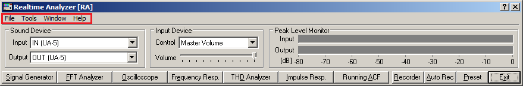

DSSF3 > RA > Reference Manual > Main Window

| Menu | Item | Description |
|---|---|---|
| File (F) | Exit (X) | Quit the application. |
| Tool (T) | Settings (S) | Adjust the font size and the window size for each measurement window. -> How to adjust the font size and window size |
| Window (W) | Signal generator (S) | Open / close the signal generator window. |
| FFT analyzer (F) | Open / close the FFT analyzer window. | |
| Oscilloscope (O) | Open / close the oscilloscope window. | |
| Impulse response (I) | Open / close the impulse response window. | |
| Running ACF (A) | Open / close the running ACF window. | |
| Preset (P) | Open / close the preset window. | |
| THD analyzer (D) | Open / close the THD analyzer window. | |
| Recorder (R) | Open / close the recorder window. | |
| Current time (T) | Open / close the current time window. | |
| Help (H) | Version information (V) | Show the version information. |
| Read me (R) | Open the read me file. | |
| Online manual (M) | Open the online manual (only when connected to the Internet). | |
| Technical support (S) | Open the technical support page (only when connected to the Internet). | |
| Document Q&A (Q) | Open the Q&A page (only when connected to the Internet). | |
| Online update (U) | Execute the online update (only when connected to the Internet, and available only in Version 5.x.x.x.). | |
| License registration (L) | Open the registration dialog. | |
| Buying YmecStore (Y) | Open the purchase page (only when connected to the Internet). |
DSSF3 > RA > Reference Manual > Main Window